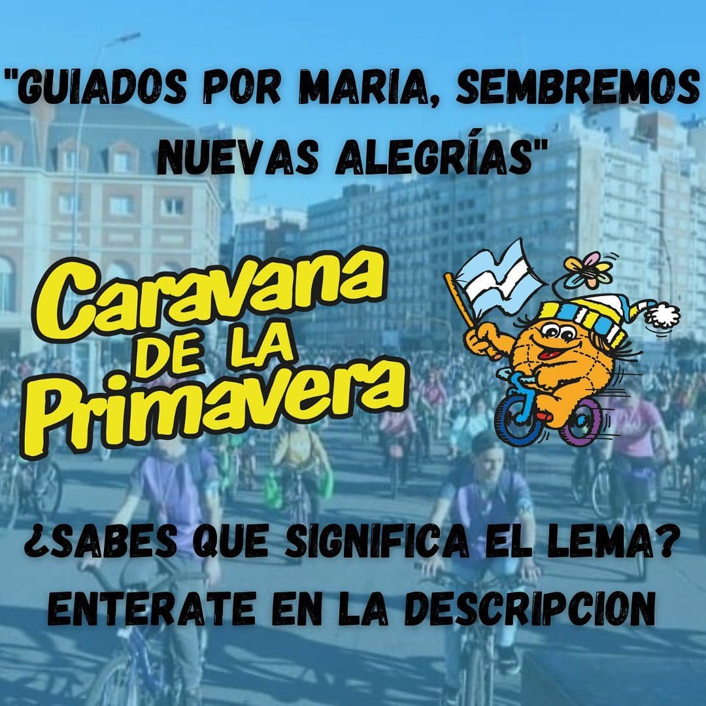

Caravana de la Primavera
La caravana de la primavera es un evento que se realiza ya hace 61 años en la ciudad de Mar del Plata todos los 21 de septiembre para recibir la primavera en la ciudad. Es un trayecto en bicicleta por toda la ciudad, recorriendo puntos historicos de la misma y descansando en el medio del paseo con un picnic familiar. Año a año junta a mas de 30000 personas de la ciudad en este hermoso evento.
 Se pedalea cada año bajo un mensaje que los
organizadores buscan transmitir a la sociedad.
Siempre teniendo en cuenta el contexto social de nuestro pais
Este año es:
“Guiados por María, sembremos nuevas alegrías”
Pero no es una simple frase! Tiene un contenido que la explica!
Te lo dejamos a continuación!
Querido caravanista:
¿Cómo estás? Como todos los años te venimos a transmitir un mensaje, una propuesta que esperamos te ayude. Por eso te pedimos que hagas memoria de los momentos que te hacen feliz, esos momentos que dibujan una sonrisa en tu rostro.
Pero no queremos que solo pienses en vos, sino también en los demás. Muchas personas vivieron situaciones muy fuertes este último tiempo hasta el punto de no saber cómo salir adelante. Por esto también te invitamos a ser el impulso que alguien necesite para volver a vivir esos momentos de alegría. Animate a ser semilla de vida para el otro y sembrar alegría en todos los lugares que vayas.
No es una tarea fácil. Todo en la vida se forma a través de un proceso. Como el granjero siembra la semilla, la riega y se asegura que le den los rayos del sol, así tenemos que ser nosotros en nuestra vida. Volver a cultivar y cuidar las cosas que nos hacen felices, siendo siempre tierra fértil para todo aquel que lo necesite.
Por último, queremos recordarte que nadie camina solo. Todos tenemos a alguien que nos acompaña en nuestro día a día. Este año queremos que te dejes guiar por María, como lo hacemos nosotros en cada edición de la Caravana. Nuestra madre del cielo siempre está a nuestro lado y junto a ella podes sembrar alegría en tu vida y en la vida de los demás.
De esta situación salimos entre todos. Queremos que estas nuevas alegrías sean el inicio de algo nuevo, de una sociedad más unida, más alegre y más empática.
Por la pandemia estos ultimos 2 años se realizo una feria de emprendedores de la ciudad en su lugar, donde cientos de comerciantes acercaron sus productos y talentos para mostrarlos a la ciudad entera. El video de arriba muestra el exito de esta ultima edicion